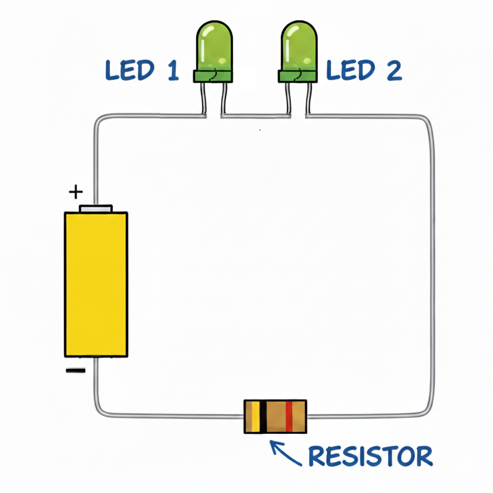
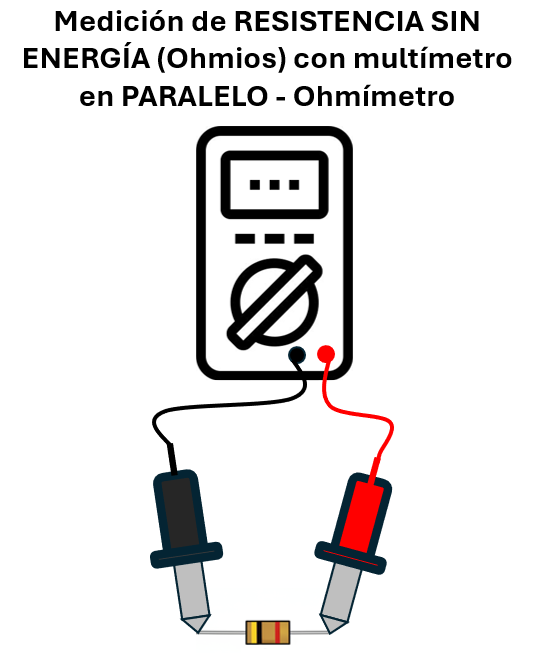
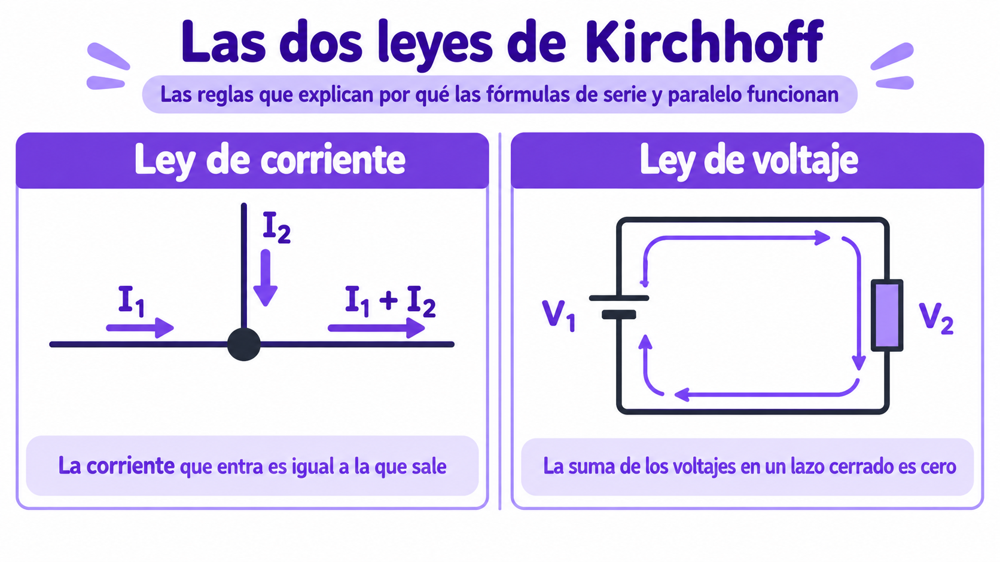
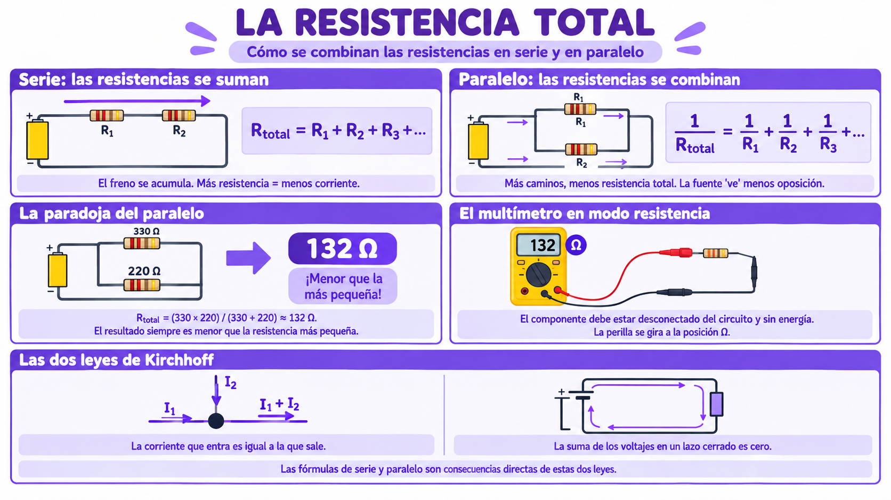

🟣 La resistencia total
🧮 ¿Por qué existe una "resistencia total"?
Cuando miras un circuito desde la fuente, no ves cada resistencia por separado. Ves una sola resistencia equivalente: la que tendría el mismo efecto que todas las demás juntas. A esa resistencia se le llama resistencia total (Rtotal).
La pregunta clave es: ¿cómo se calcula esa resistencia total? La respuesta depende de la configuración: serie o paralelo. Y en cada caso, la fórmula es distinta.
💡 Idea clave: la resistencia total no es una propiedad de un componente, sino una propiedad del circuito. Cambia según cómo estén conectados los componentes.
➕ Serie: las resistencias se suman
Antes de las fórmulas, conviene recordar una imagen. Si imaginas la corriente como agua que corre por un río:
- En serie: es un río de un solo cauce. El agua pasa por todos los tramos, uno tras otro. Cada tramo pone su propio freno, y los frenos se acumulan.
- En paralelo: es un delta con varios brazos. El agua se reparte entre los brazos, y cada brazo lleva su propio caudal.
Con esa imagen en mente, las fórmulas de las siguientes secciones no son arbitrarias: describen matemáticamente el comportamiento del agua en cada configuración.

En un circuito en serie, la corriente pasa por todas las resistencias, una tras otra. Cada una le pone su propio freno. El resultado es que los frenos se acumulan: la resistencia total es la suma de todas.
🔍 Ejemplo concreto
Si conectas en serie dos resistencias de 330 Ω y 220 Ω, la resistencia total es:
La fuente ahora ve 550 Ω, no dos resistencias separadas. Y como la resistencia total es mayor que la de cada componente por separado, la corriente que circula será menor.
💡 Regla mental: en serie, más resistencia = menos corriente. Sumar resistencias es como poner más piedras en el camino.
📐 Efecto en el voltaje
En serie, el voltaje de la fuente se reparte entre los componentes. Cada resistencia se queda con una porción proporcional a su valor. Por eso la suma de los voltajes individuales siempre es igual al voltaje total:
➗ Paralelo: las resistencias se combinan
En un circuito en paralelo, la corriente se reparte entre varias ramas. Cada rama tiene su propia resistencia. Pero cuando la fuente mira el circuito completo, ve menos resistencia que la de cualquier rama individual. ¿Por qué? Porque hay más caminos para pasar.

🧠 ¿Por qué la fórmula del paralelo tiene esa forma?
La fórmula de serie es intuitiva: si pones dos frenos uno tras otro, el freno total es la suma. Pero la de paralelo parece al revés: sumas inversos. ¿Por qué?
Imagina un río que se divide en dos brazos. El agua total que pasa por el río es la suma del agua que pasa por cada brazo. Y cada brazo ofrece su propia resistencia al paso del agua.
Cuanto más ancho sea un brazo, menos resistencia ofrece, y más agua lleva. Si añades un tercer brazo, el río tiene más capacidad total de llevar agua: la resistencia total del río disminuye.
La fórmula del paralelo captura exactamente eso: cada rama aporta conductancia al circuito (la conductancia es lo contrario de la resistencia). Al sumar las conductancias de todas las ramas, obtienes la conductancia total. Y como la resistencia es lo opuesto, la fórmula se escribe con inversos:
Por eso, en paralelo, cuanto más ramas, menos resistencia total. Cada nueva rama es una "autopista adicional" para la corriente.
🔍 Ejemplo concreto
Si conectas en paralelo dos resistencias de 330 Ω y 220 Ω, la resistencia total es:
Para sumar fracciones, se busca el común denominador. Pero es más rápido usar la fórmula del "producto sobre suma" que veremos en el siguiente apartado:
¡La resistencia total (132 Ω) es menor que la más pequeña de las dos resistencias (220 Ω)! Eso es la paradoja del paralelo.
💡 La paradoja explicada: cuando hay más caminos para la corriente, es más fácil pasar. La fuente "ve" menos resistencia porque tiene más opciones. Es como si agregaras una autopista paralela a un camino congestionado: el tráfico fluye más.
📐 Efecto en la corriente
En paralelo, la corriente total es la suma de las corrientes de cada rama:
Cada rama tiene su propio caudal, proporcional a su resistencia. La rama con menos resistencia lleva más corriente. La rama con más resistencia lleva menos.
⚠️ El caso especial: dos resistencias en paralelo
Para dos resistencias en paralelo, existe una fórmula simplificada que puedes usar:
Es el famoso "producto sobre suma". Por ejemplo, para dos resistencias de 330 Ω y 220 Ω:
Nuevamente, el resultado (132 Ω) es menor que la más pequeña de las dos resistencias (220 Ω).
💡 Atajo útil: para dos resistencias iguales en paralelo, la resistencia total es la mitad de una de ellas. Por ejemplo, dos de 330 Ω en paralelo dan 165 Ω.
🌍 ¿Para qué sirve calcular la resistencia total?
Calcular la resistencia total no es un ejercicio académico: es una herramienta de diseño. Aquí van algunas aplicaciones reales:
- Verificar la corriente que circulará. Si sabes la resistencia total y el voltaje de la fuente, puedes calcular la corriente con la ley de Ohm. Eso te dice si un componente va a soportar el paso de esa corriente o si se quemará.
- Dimensionar la fuente de alimentación. Una fuente tiene un límite de corriente que puede entregar. Si el circuito pide más corriente de la que la fuente puede dar, la fuente se sobrecalienta.
- Diseñar divisores. Muchos circuitos necesitan dividir un voltaje (por ejemplo, bajar 5 V a 3,3 V). El cálculo de resistencias en serie es la base de esos divisores.
- Detectar fallos. Si mides la resistencia total de un circuito y no coincide con el cálculo teórico, algo está mal: puede haber un componente dañado o una conexión floja.
💡 Regla mental: antes de conectar nada, calcula la resistencia total. Si el resultado es muy bajo, la corriente será muy alta y puedes quemar componentes. Si es muy alto, la corriente será muy baja y los componentes no funcionarán.
🔬 Taller: Midamos la resistencia total
Vas a calcular primero la resistencia total de varias combinaciones, y luego verificarla con el multímetro. Es el trabajo real de un ingeniero de control de calidad: predecir y después verificar.
💡 Dos formas de hacer este taller: puedes hacerlo en el aula (con resistencias del kit y un multímetro) o llevarlo a casa si tienes acceso a un multímetro. Si no lo tienes, puedes hacer los cálculos teóricos y compararlos con los del compañero.
📟 Antes de medir: el modo resistencia del multímetro
Para este taller vas a usar el multímetro en modo resistencia (Ω), que mide la oposición al paso de la corriente en un componente.

💡 Cómo medir resistencia:
- Gira la perilla del multímetro a la posición Ω. Elige un rango mayor que la resistencia que esperas medir (por ejemplo, 2000 Ω si esperas medir cientos de ohmios).
- Desconecta el componente del circuito y asegúrate de que no tenga energía. Medir resistencia con el circuito encendido da valores incorrectos y puede dañar el instrumento.
- Conecta la punta roja a un extremo del componente y la punta negra al otro extremo. No importa cuál punta va a cada lado.
- Lee el valor en la pantalla. Si aparece OL (Over Limit), significa que el valor está fuera del rango: sube a un rango mayor.
⚠️ Regla de oro antes de medir: nunca midas resistencia en un circuito que esté encendido. La energía del circuito interfiere con la medición del instrumento. Primero apaga, luego mide.
El multímetro en modo resistencia inyecta una pequeña corriente propia y mide cuánto tarda en pasar por el componente. Por eso el componente debe estar aislado: si el circuito aporta corriente, los dos flujos se mezclan y la medición es incorrecta.
🧰 Materiales
- Cuatro resistencias: dos de 330 Ω, una de 220 Ω y una de 1 kΩ.
- Un multímetro en modo ohmios (Ω).
- Una protoboard o cables para conectar las resistencias.
- Tu cuaderno de bitácora y una calculadora.
🧠 Paso 1: Calcula antes de medir
Antes de tocar el multímetro, calcula teóricamente la resistencia total de cada una de estas combinaciones. Usa las fórmulas de las secciones anteriores.
- 330 Ω + 220 Ω en serie
- 330 Ω + 330 Ω en serie
- 330 Ω + 220 Ω en paralelo
- 330 Ω + 330 Ω en paralelo
Anota los resultados en la columna "R total calculada" de la tabla.
🔬 Paso 2: Mide y compara
Ahora conecta cada combinación en la protoboard o con cables, y mide con el multímetro en modo Ω. Recuerda: sin energía, solo las resistencias.
📊 Paso 3: Registra los resultados
| Combinación | R total calculada | R total medida | Diferencia | ¿Coincide? |
|---|---|---|---|---|
| 330 + 220 serie | ☐ Sí / ☐ No | |||
| 330 + 330 serie | ☐ Sí / ☐ No | |||
| 330 + 220 paralelo | ☐ Sí / ☐ No | |||
| 330 + 330 paralelo | ☐ Sí / ☐ No |
🤔 Paso 4: Analiza
- ¿Los valores medidos coinciden con los cálculos?
💡 ¿Por qué el valor medido no coincide exactamente con el calculado?
Cuando calculas una resistencia teóricamente, obtienes un número exacto. Pero cuando la mides con el multímetro, obtienes un número ligeramente diferente. Eso no es un error tuyo ni del instrumento: es la tolerancia.
Cada resistencia que sale de fábrica tiene un valor real que se desvía ligeramente del valor ideal. La banda dorada (o plateada) en el cuerpo del componente indica cuánto puede desviarse:
- Una resistencia de 330 Ω ±5% puede valer entre 313,5 Ω y 346,5 Ω.
- Una resistencia de 220 Ω ±5% puede valer entre 209 Ω y 231 Ω.
Por eso, cuando dos resistencias del mismo valor se conectan en paralelo, la resistencia total no será exactamente la mitad, sino un valor cercano. Si la diferencia entre el valor calculado y el medido está dentro del rango de tolerancia, todo está bien.
📝 Mi nota sobre el taller
Cuando termines, escribe una nota breve al final de tu hoja de registro. No es una tarea, es una reflexión. Puedes escribir sobre:
- ¿Con quién hiciste el taller?
- ¿Los cálculos coincidieron con las mediciones? ¿Qué diferencias encontraste?
- ¿Qué combinación te resultó más contraintuitiva?
- ¿Por qué crees que la fórmula de paralelo es "1 sobre la suma de los inversos"?
❓ Pregunta guía
Si tienes dos resistencias de 330 Ω y 220 Ω, ¿en qué configuración la resistencia total es mayor? ¿Por qué? ¿Cómo se relaciona eso con la corriente que circula?
⚠️ Seguridad: nunca midas resistencias que estén soldadas a una placa conectada a la corriente. Desconecta el aparato y retira las pilas antes de manipularlo.
📜 El hombre que puso reglas a los caminos
A mediados del siglo XIX, un físico alemán llamado Gustav Kirchhoff (1824–1887) estaba estudiando cómo se comportaban los circuitos eléctricos. Tenía apenas veintiún años cuando formuló dos leyes que hoy llevan su nombre y que son la base de todo lo que sabemos sobre serie y paralelo.
🔌 Primera ley: la conservación de la corriente
Kirchhoff observó que en cualquier punto de un circuito (lo que hoy llamamos "nodo"), la corriente que entra es igual a la corriente que sale. Es decir: los electrones no se acumulan en un punto. Esta ley es la que explica por qué la corriente se reparte en paralelo: la corriente total que llega al nodo se divide entre las ramas, pero la suma de las corrientes de las ramas es igual a la corriente total.
🔁 Segunda ley: la conservación del voltaje
Kirchhoff también observó que, si recorres un circuito cerrado y sumas todos los voltajes, el total es cero. Esto se traduce en que el voltaje que entrega la fuente se reparte exactamente entre los componentes. Por eso, en serie, la suma de los voltajes de cada resistencia es igual al voltaje de la fuente.
🔗 Conexión con las fórmulas que acabas de ver
Las dos leyes de Kirchhoff explican por qué las fórmulas de serie y paralelo funcionan:
- La ley de corriente explica por qué en paralelo las corrientes se suman: la corriente total que llega al nodo es la suma de las corrientes que salen por cada rama.
- La ley de voltaje explica por qué en serie los voltajes se suman y se reparten: el voltaje total es la suma de los voltajes individuales de cada componente.
Es decir, las fórmulas de resistencia total no son reglas inventadas: son consecuencias directas de las leyes de conservación de la corriente y del voltaje.

🏛️ El legado de Kirchhoff
Kirchhoff no inventó la electricidad, pero le puso reglas matemáticas. Sus dos leyes se siguen enseñando hoy en todas las carreras de ingeniería, y son la herramienta que usan los ingenieros para analizar circuitos complejos, desde un simple juego de luces hasta un chip de computadora.
La lección: a veces las reglas más simples explican los fenómenos más complejos. Kirchhoff no necesitó fórmulas complicadas: solo dos ideas fundamentales sobre cómo se conservan la corriente y el voltaje.
Fuentes: biografías de la Universidad de Heidelberg y archivos históricos de la física del siglo XIX.🗺️ Repaso visual

La resistencia total
Dale play y en 6 minutos descubrirás:
- ➕ Serie: por qué las resistencias se suman.
- ➗ Paralelo: por qué la resistencia total es menor que la más pequeña.
- 📐 Las fórmulas: cómo calcular la resistencia total en cada caso.
- 📟 El multímetro en modo resistencia: cómo medir la resistencia total de un circuito.
- 🔌 Las leyes de Kirchhoff: el hombre que puso reglas matemáticas a los caminos.
💡 Ten tu calculadora o tu cuaderno a mano: hay cálculos que querrás hacer tú mismo.